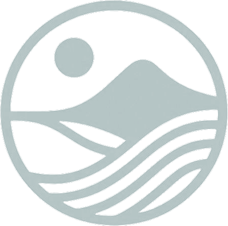

THE ARCHEAN PROJECT
Creating a more resilient future of abundant food and power by using science and the latest AI, statistical, and geospatial tools.

Creating a more resilient future of abundant food and power by using science and the latest AI, statistical, and geospatial tools.